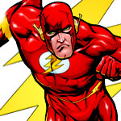

Gruppeninformation
Hallo, wir sind 5 Erstsemester-Studenten aus Berlin. Seit wenigen Tagen sind wir an der HTW Berlin immatrikuliert. Wir hatten viele Probleme und Hindernisse zu meistern, bis wir letztendlich hier angekommen sind. Mit dieser Seite haben wir uns zum Ziel gesetzt, eine Anlaufstelle für "Neu-Berliner" aufzubauen. Fragen rund um die Wohnungssuche und weitere nützliche Tipps sollen hier kostenfrei zur Verfügung gestellt werden.
Gruppenmitglieder
- Andreas Folz
- Alter
- 23
- Herkunft
- Ursprünglich Saarbrücken, Saarland. Seit knapp 4 Jahren in Berlin.
- Stadt
- Berlin
- Mein Tipp
- Neukölln hat die billigsten Spätis!
- Dilan Yücel
-

- Alter
- 20
- Herkunft
- In Istanbul in der Türkei geboren, seit ihrem 4. Lebensjahr in Berlin.
- Stadt
- Berlin
- Mein Tipp
- Den besten Döner gibt es in Spandau bei Ye-Mc!
- Maximilian Oertel
- 
- Alter
- 18
- Herkunft
- Aus Weida bei Gera in Thüringen, seit Studienbeginn im WiSe 2014/15 in Berlin
- Stadt
- Berlin
- Mein Tipp
- In Friedrichshain in der Frittierbude gibt es die ausgefallensten Burger.
- Timur Özer
-

- Alter
- 27
- Herkunft
- Bremen, Bremen. Seit Oktober in Berlin.
- Stadt
- Berlin
- Mein Tipp
- Rechtzeitig Termine bei Bezirksämtern/Bürgerämtern buchen.
- Marc Piper
-

- Alter
- 19
- Herkunft
- Kommt aus München in Bayern, seit Studienbeginn im WiSe 2014/15 in Berlin.
- Stadt
- Berlin
- Mein Tipp
- Studentenwohnheime sind unterbewertet.